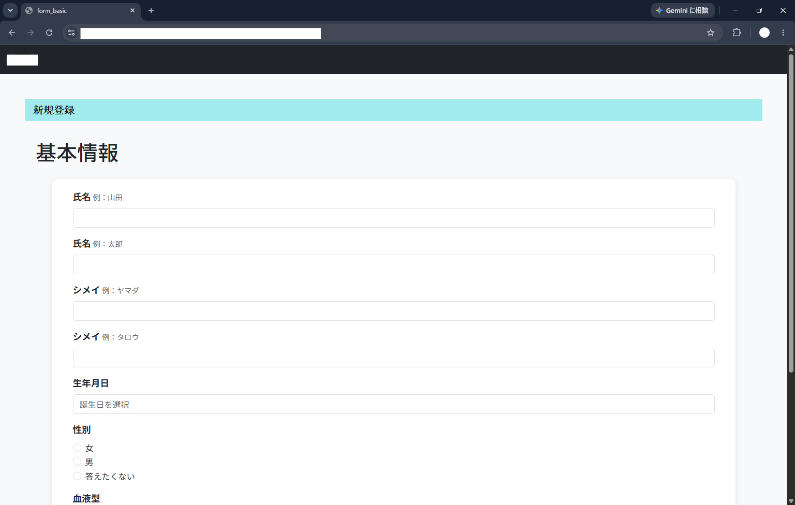
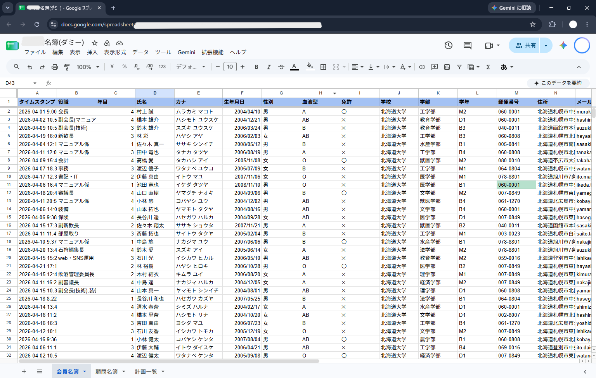

画面下の🧭ボタンを押すと、この講義全体の内容がコピーされます。まず新しいGeminiのチャットに貼り付けてください。分からないページが出てきたら、そのページで🤖ボタンを押して、同じチャットの続きに貼り付けて質問できます。
サークルアプリ オンボーディング 第0回⏱ 目安1分
キックオフ・利用体験会
コードは一切見ません。まずは「使う人」として体験してみましょう。
今日のゴール⏱ 目安2分
今日やること
- このアプリが何のために作られたのかを知る
- 実際に自分で部員登録フォームを入力してみる
- 入力したデータが裏側でどう扱われているかを見る
- これから一緒に進めていく開発の全体像をざっくり知る
コードやGitの話は次回（第1回）から。今日は「利用者目線」だけでOKです。
背景⏱ 目安5分
なぜこのアプリを作っているのか
これまで先代が作ったエクセルマクロでの書類作成を利用した名簿管理と書類作成をしてきましたが、引継ぎの過程で不備が生じてきて、開発のし直しが必要な状況です。
このアプリは、サークルの部員情報、共装情報等を含めたデータの一元管理と作業の簡易化を目指しています。
願いとしては、常に皆さんが、自分の手で、今必要なアプリケーションを維持していっていただきたいです。
実践⏱ 目安10分
実際に触ってみよう
1下のURLをブラウザで開く
2「新規登録」を選ぶ
3基本情報 → 所属情報 → 連絡先 → 緊急連絡先、の順に入力していく
4確認画面が出たら内容を見て送信する

URLはこのスライドには載せていません。横野から直接（LINEなど）共有された本番URLを使ってください。
練習用なので、内容は仮のものでOKです（本名でなくても構いません）。
起動に時間がかかります。2分ほど見ていただけますとひらけると思います。
裏側を見てみる⏱ 目安5分
送信すると何が起きているか
今入力してもらった内容は、Googleスプレッドシートに自動で1行追加されています。
- 今の版（V1）は Flask というPythonの仕組みで動いている
- 送信されたデータは gspread という仕組みでスプレッドシートに書き込まれる
- この画面共有で、実際に増えた行を一緒に見てみましょう

スプレッドシートへのアクセス権はまだ渡していないので、今日は画面共有で確認します。
これから⏱ 目安5分
今後の展望（ざっくり）
- 今の版（Flask + Render）は最初の一歩として作ったもの
- 次のフェーズとして、GAS（Google Apps Script）＋ React という構成に作り替えていく計画
- 無料で恒久的に運用でき、GitHubで公開して一緒に開発を進められるようにするのが狙い
詳しくは今後の回で、実際のコードやREADME（設計ドキュメント）を少しずつ一緒に読んでいきます。要件定義書は最終回（第4回）終了時にお渡しします。
次回予告⏱ 目安3分
第1回：Git/GitHub基礎会
- GitHubアカウントを作る
- このプロジェクトのGitHub Organizationに招待する
- 実際に小さなPR（自己紹介ファイルの追加）を1本出してみる
事前準備：もしよければ、ノートPCとGoogleアカウントを用意しておいてください。